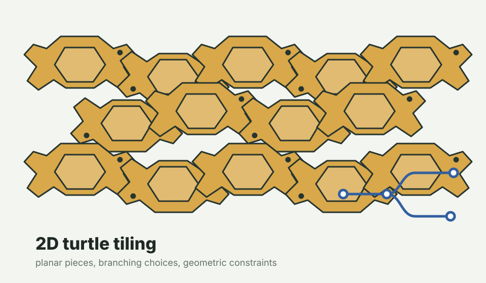

interactive playground
3D Lattice Tiler
A browser-only JavaScript playground for lattice polyhedra and polycubes on Z^3, with mixed tile systems, custom polycubes, live search metrics, and search-tree inspection.
Launch playgroundGTS research notes and playgrounds
Search problems where a combinatorial object grows under geometric constraints, and markings, macros, symmetries, or certificates help guide the tree.
Small working environments for testing geometric tree search ideas.
interactive playground
A browser-only JavaScript playground for lattice polyhedra and polycubes on Z^3, with mixed tile systems, custom polycubes, live search metrics, and search-tree inspection.
Launch playground
visual experiment
A planar tiling thread for studying the same tree-search questions in a smaller geometry: frontier choices, compatible placements, and recognizable branching structure.
Notebook import plannedNotes that frame the search problem and collect examples.
Observable essay
The originating post for this project: why geometric constraints make ordinary tree search feel different, and what kinds of markings or macros might make the tree navigable.
Read postGTS sits near constraint programming, exact cover, tiling search, and geometric deep learning, but emphasizes the growing search tree itself: frontier choices, symmetry classes of moves, reusable patches, and checkable local certificates.